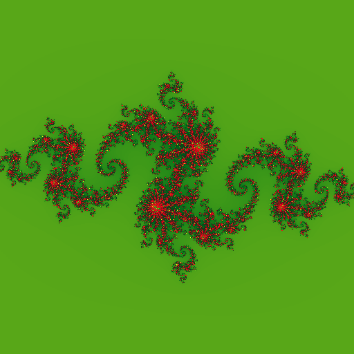
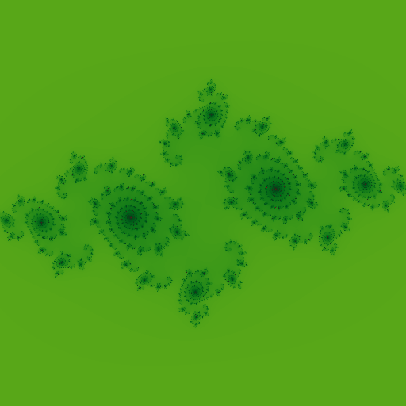

This week I was exploring fractals - specifically computing fractals using Julia Set
quadratic equation. I considered using SYCL DPC++ for implementation, which I've been
working on for few weeks now. I was interested in using image interface of DPC++, which
just same as buffer interface, creates an abstraction over raw memory address based
data read/ write ( read pointer arithmetic ), while providing some image specific functionality for data interpretation,
reading & writing. I find buffer & image interfaces easier to work with rather than raw pointers,
allocated using Unified Shared Memory, due to their elegance in design; accessor based
data read/ write on device/ host, providing implicit data movement/ visibility, which in-turn
lets me implicitly define task graph dependencies. So it's good, nice, powerful abstraction.
I'll now spend some time explaining how to sequentially compute Julia Set fractal.
I sequentially apply aforementioned equation on each pixel of target fractal image as long as certain conditions satisfy. Let us assume, I'm working with an image of dimension 4 x 4. This is how each cell ( read pixel ) is addressed in 4 x 4 image. Notice the origin of reference frame in use. These indices can easily be generated using two nested for loops.
But for computing fractal, I've to reinterpret indices in a way where origin of reference frame should move to center of image. And those points on 2D cartesian plane to be interpreted as complex numbers ( read a + ib, where a, b are components of 2D point along X & Y-axis respectively ). It can be easily generated using meshgrid method.
Notice along X-axis points are in range [-2, 2), while along Y-axis they're in range [2, -2). For scaling them to S, I first take them to (-1, 1) interval & then multiply by S. Now as I've these complex numbers in matrix form properly scaled, I'd like to go to actual fractal computation part.
Quadratic iteration based Julia Set computation can be encapsulated in following function. As long as z.real()2 + z.imag()2 < S2, I keep applying z = z2 + c. There is another bound on number of iterations that can be performed.
I choose S ( = scale ) such that S2 - S >= abs(c), where c is a constant complex number. Say, I choose to work with c = (-0.8+0.156j), in that case setting S = 2.f, satisfies aforementioned constraint.
From quadratic_iteration(...), I obtain #-of evaluations it takes for z
to determine whether it's in set with radius S or not. Depending upon #-of evaluations for certain
z, I assign different color to respective image pixel. Recently I discovered a nice way to assign
beautiful colors to each pixel of image using cosine function. It simply requires me to
evaluate color(t) = a + b * cos[ 2 * pi * (c * t + d)], where I can variate
a, b, c, d which are 3-element tuples of floats.
In this case t = quadratic_iteration(...) / MAX_ITR.
I recommend reading more about cosine palette based color generation technique
here.
Today I'm using following method for colorizing each pixel of fractal.
Now I've one sequential program which computes Julia Set Fractal of dimension 512x512, by evaluating quadratic equation z = z2 + c. Following is the computed fractal with c = (-0.8 + 0.156j).

It's good time to move to parallel implementation of Julia Set computation on heterogeneous accelerators ( read CPU, GPGPU, FPGA etc. ).
Being a good candidate for SIMD model, Julia Set computation fits well in data parallel programming domain, where each pixel
of resulting image is processed independently & RGBA pixel value is written in respective memory location.
The only challenge I see --- how to compute complex number (a + ib) located in pixel location (a, b) ?
In previous iteration, I was using meshgrid method to do so, this time I've to implement it manually.
Each kernel invocation processes single ( unique ) pixel of image, so certain invocation has knowledge
of which certain pixel it is responsible of processing. Let me assume certain kernel invocation knows, it has to process
image pixel (r, c). Again my interest is to move reference frame to center of image.
Notice each (x, y) point on 2D cartesian plane, centered at middle of image matrix, is seperated by distance 1, so I can compute what should be (x, y) in current pixel location (r, c), with formula a + k * s.
Rest is same as I've already done while implementing sequential algorithm for fractal computation. I need to scale (x, y) point by factor S, so I rewrite aforementioned function as below, which I make use of for converting (r, c) image pixel to complex number (a+ib) which is to be operated on during fractal computation i.e. checking whether that complex number is part of Julia Set or not.
I play around with complex constat c, with c = -0.123 + 0.745j, it generates following fractal.
Here's a dendrite shaped fractal, with c = 0.f + 1.0j.
With c = -0.75 + -0.2j, beautiful galaxy shaped fractal is generated.
Good thing about cosine based color palette is just changing to following starts generating fractals with very different color.
I keep whole DPC++ Julia Set computation implementation
here
for future reference. In coming days, I plan to compute Julia Set with sine/ cosine function, as this time I did with quadratic
function. I'm also interested in Newton Fractal, which I'll consider implementing next week in DPC++.
Have a great time !